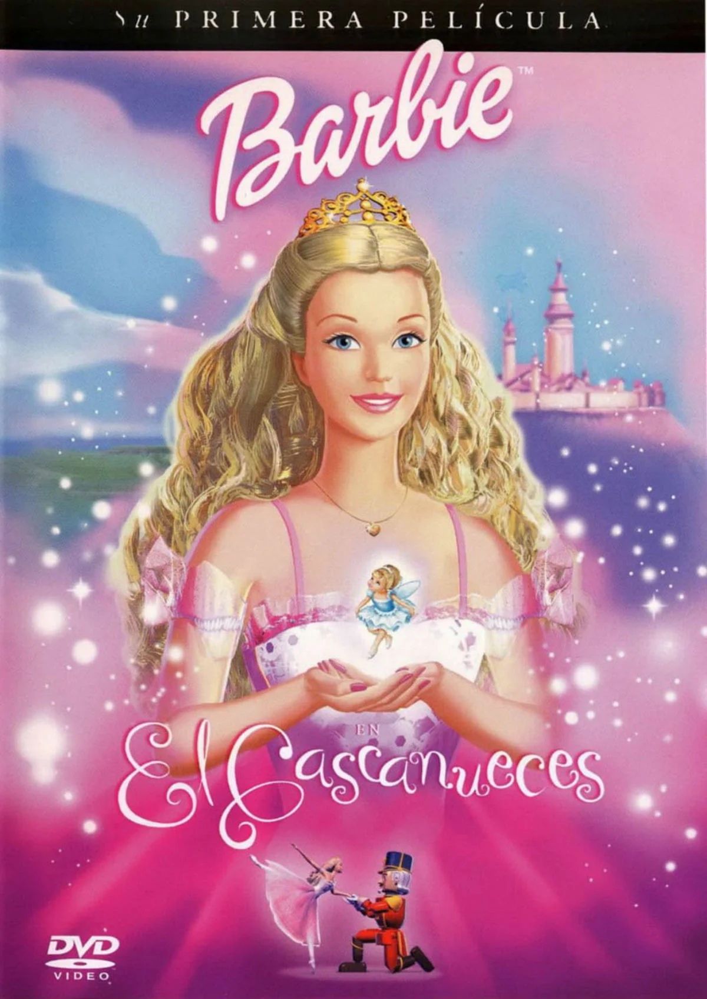

Mis series, películas y canciones favoritas
Películas favoritas:
-
 Alicia en el País de las Maravillas
Alicia en el País de las Maravillas- Fantástica: Te sumerge en un mundo mágico lleno de personajes surrealistas y aventuras fuera de lo común.
- Profunda: Aunque parece una película infantil, tiene varios niveles de interpretación sobre la identidad y el crecimiento.
- Visualmente impresionante: Cada adaptación visual, sea animada o de acción real, está llena de colores vibrantes y diseño creativo.
-
 Mean Girls
Mean Girls- Divertida: Su humor es agudo y lleno de referencias icónicas que siguen siendo populares.
- Crítica social: A través de la comedia, aborda temas como la presión social y los estereotipos en la adolescencia.
- Personajes memorables: Regina George, Cady Heron y el resto del elenco son personajes que dejan una huella en la cultura pop.
-
El Cascanueces de Barbie
- Mágica: Basada en el clásico cuento, es una historia llena de magia y fantasía que encanta a todas las edades.
- Hermosa banda sonora: Utiliza piezas de música clásica que elevan la experiencia visual.
- Inspiradora: Transmite valores como el coraje, la bondad y la importancia de luchar por lo que es correcto.
Series favoritas:
-
 Gravity Falls
Gravity Falls- Misteriosa: Cada episodio tiene un misterio intrigante que mantiene la curiosidad viva.
- Humor para todos: Aunque está orientada a un público joven, tiene muchos chistes que los adultos también disfrutan.
- Personajes carismáticos: Los protagonistas y secundarios tienen personalidades únicas y divertidas.
-
 Stranger Things
Stranger Things- Nostalgia ochentera: La serie está llena de referencias a la cultura pop de los años 80, lo que encanta a los fans de esa época.
- Misterio y ciencia ficción: Su mezcla de lo paranormal con el drama adolescente crea un balance único y emocionante.
- Personajes entrañables: Los lazos de amistad y valentía entre los personajes son uno de los puntos más fuertes de la serie.
-
The Crown
- Basada en hechos reales: Narra la vida y el reinado de la reina Isabel II con detalles históricos muy bien cuidados.
- Actuaciones destacadas: Los actores capturan perfectamente la esencia de los personajes reales.
- Visión del poder: Muestra cómo la monarquía enfrenta los cambios sociales y políticos, lo que la hace fascinante desde una perspectiva histórica.
Canciones favoritas:
-
Bohemian Rhapsody – Queen
- Innovadora: Combina ópera, rock y balada en una única canción, algo revolucionario para su época.
- Emotiva: La letra es intrigante y permite múltiples interpretaciones emocionales.
- Icónica: Es una de las canciones más reconocidas a nivel mundial, con un legado que ha trascendido generaciones.
-
 Blinding Lights – The Weeknd
Blinding Lights – The Weeknd- Estilo retro: Su sonido inspirado en los años 80 crea una atmósfera nostálgica y moderna a la vez.
- Pegajosa: Su ritmo vibrante y melodía inolvidable hacen que se quede en la mente de cualquiera.
- Videoclip cinematográfico: El video tiene una narrativa visual impactante que acompaña la canción perfectamente.
-
 Moon – Bruno Mars
Moon – Bruno Mars- Melodía suave: Tiene un ritmo relajado que invita a disfrutar y conectar con las emociones.
- Romántica: La letra está llena de sentimientos profundos que la hacen perfecta para momentos tranquilos.
- Estilo retro soul: Bruno Mars sabe capturar la esencia de géneros clásicos y darles un toque moderno.